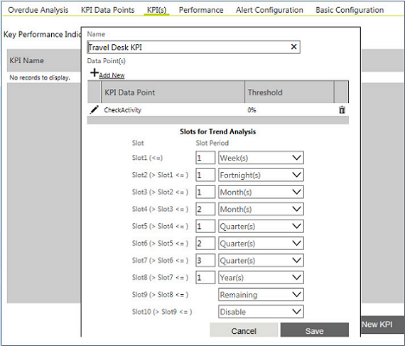

No
KPI(s)
You can use the KPI(s) tab to define thresholds for the KPI data points identified in the previous tab.
To add a KPI:
- Click New KPI. A dialog box appears.
- Enter the following information:
- Name: Name for the new KPI.
- Data Point(s): Click Add New to add a Data Point, and enter the overall Threshold for it.

- Slots for Trend Analysis: Select the time periods for trend analysis.
- Click Save.